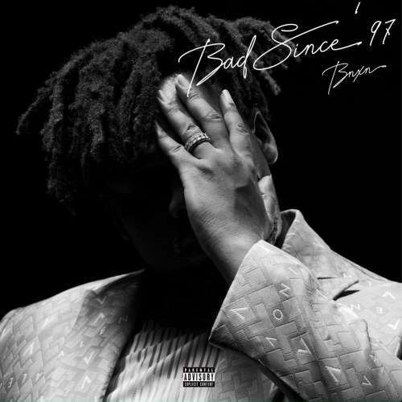

CKAY - YOU
Ckay drops new single tittled 'you' This new release is an insight into the
singer’s debut studio album, ‘Bad Romance’ slated for release in the coming weeks which
he promised his fans would blow their mind.
SEP.01.22
OLAMIDE - WE OUTSIDE
YBNL boss drops yet another single 'we outside', this is a follow up to the
wande coal assisted song 'Hate me'The new tune serves as his second official
single of 2022.
SEP.01.22
REMA X SELENA GOMEZ - CALM DOWN (REMIX)
Rave Lorde, Rema teams up with American singer, Selena Gomez, delivers a new version
of his latest mega hit “Calm Down“. The original version was one of ‘Rave & Roses‘
album lead single.
SEP.01.22

BNXN FKA BUJU - BAD SINCE 97
BNXN fka Buju drops his sophomore EP title, “Bad Since ’97“, A follow
up to the 2021 debut EP titled, ‘Sorry I’m Late‘.Bad Since ’97 EP consist of
7 tracks and features some of the Afrobeats big players- Olamide, Wizkid and Wande Coal.
SEP.01.22

DJ TUNEZ FT. WIZKID/ALPHA P/TAY IWAR - MAJO
Starboy official disc jockey, DJ Tunez drops a new song, featuring Wizkid,
Alpha P and Tay Iwar.
This new track, produced by P.Priime is off DJ Tunez soon to EP- Cruise Control Vol.
1.
SEP.01.22